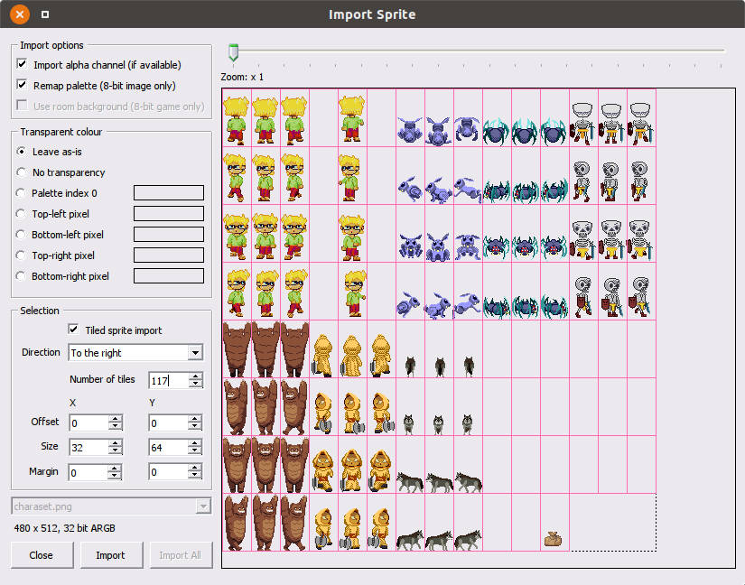

Sprite Manager
The sprite manager is where you can import sprites and organize them into folders. Each sprite that is imported will be assigned a sprite number which is used as its unique identifier.

The sprite manager has two panes, on the left are the sprite folders. Right click here to create a subfolder, rename an existing subfolder, or delete a subfolder (losing all of its contents).

The pane on the right, is where imported sprites are displayed. Right clicking on an empty area will give you the possibility to "import new sprite(s) from files...". This allows you to import one or more compatible image files into your game project.
NOTE: Unlike other game development tools, once a sprite is imported using AGS it is added to the sprite data inside your game project's directory and the source file isn't read again unless you choose to re-import it. This is done by right clicking a sprite and choosing the "Replace sprite(s) from source..." option.
NOTE: You can quickly select all files in a folder by selecting the first file and then pressing Shift+End.
Import Sprite
Once a file or files are selected, AGS will bring up the Import Sprite window.

In this window, AGS will offer you controls which determine exactly how the images files will be used. The most crucial choice is usually to choose how transparency will be determined for the imported sprite, as well as whether to import the entire sprite or use a tiled selection.
If multiple files are being imported they can be processed individually by using the 'Import' button, or all in one go by using the 'Import All' button. The combobox near the bottom left corner of the screen will allow you to change which source image file is currently being displayed.
NOTE: if using the 'Import All' button all remaining images will be imported using the currently selected import options
NOTE: animated GIF frames are treated as separate images, so a 5 frame GIF imported as 2 tiles will result in 10 new sprites being created.